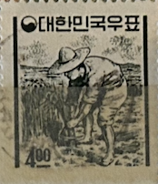
| SOURCE | TITLE| IMAGE MATCH | click to source page |
| www.ebay.com | Korea South 391 wmk 317,MNH.Michel 387. Definitive 1963 ... | 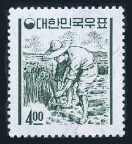 |
| www.ebay.com | Korea 366 used | eBay | 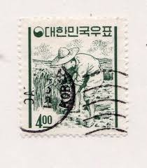 |
| stampphenom.com | South Korea 1963 Rice farmer, 4w – StampPhenom | 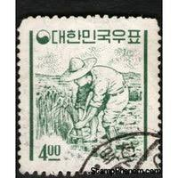 |
| www.hipstamp.com | Korea-1954-Very OLD High Catalog Value-Ten OLD Used Stamps ... | 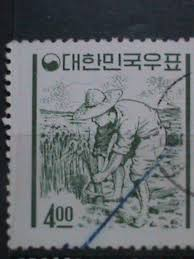 |
| www.ebay.ca | 1965 Korea SC# B7 - Rice Farmer Type of Regular Issue, 1961 ... | 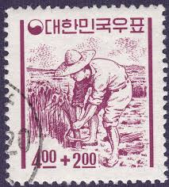 |
| www.hipstamp.com | Korea Rice 400 (AP118224) ... | Asia - South Korea, Stamp ... | 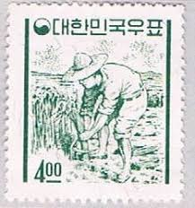 |
| www.ebay.com | Korea Stamp, 1965 , sc # B 6 , /MLH / ko - 207 | eBay | 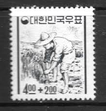 |
| m.bunjang.co.kr | 어린이돕기운동, 농부, 단편우표, 1965년 | 브랜드 중고거래 ... | 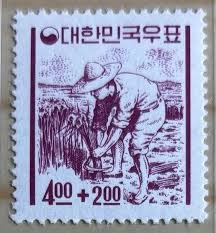 |
| stampphenom.com | South Korea 1962 Rice Farmer, 4w – StampPhenom | 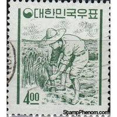 |
| theme.archives.go.kr | 우표와 포스터 | 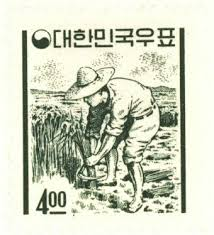 |
| www.instagram.com | Definitively Stamps | You have many options when it comes to ... | 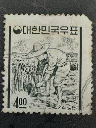 |
| marumatestore.com | 韓国 1965年第３次水害救済募金 - 趣味の切手専門店マルメイト ... | 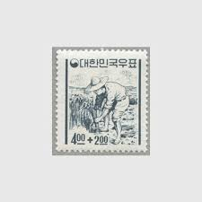 |
| woomoon.com | 193(047) / 백지환화-농부 / 만월사용제 / 62.7.28 / 전북부리 ... | 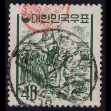 |
| m.cafe.daum.net | 가래나무 꽃 - 임업귀농모임방 - [우수카페]귀농사모/한국귀농인협회 | 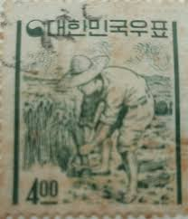 |
| theme.archives.go.kr | 우표와 포스터 | 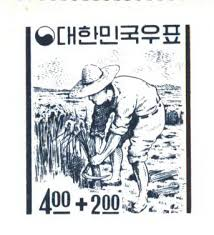 |
| www.koalastamps.com | KoalaStamps | Quality Stamps | Philately | 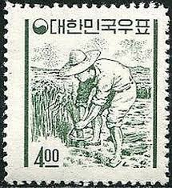 |
| m.bunjang.co.kr | 1965년 제3차 수해구제 모금 '농부'우표 명판 | 브랜드 중고거래 ... | 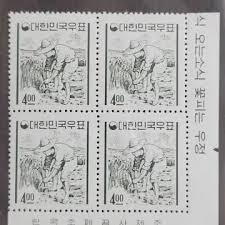 |
| m.blog.naver.com | 일부인 우체국 탐방 458] 강원 창촌(蒼村)우체국 : 네이버 블로그 | 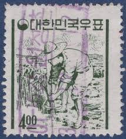 |
| www.xn--299ar7shzg8ng95s.com | 고려우표사 | 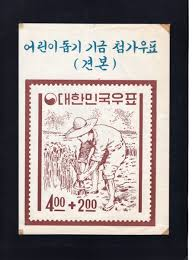 |
| www.alamy.com | Postage stamp from South Korea in the Korean painting of the ... | 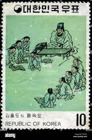 |
| www.facebook.com | Wang Wu-gu people and members of the range | 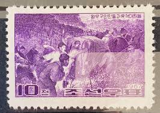 |
| www.stampcollectingblog.com | A more scientific view on color variations and changelings ... | 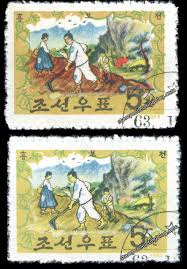 |
| koreastampsociety.org | The Number of Chollimas on Stamps Grows,Grows and Grows ... | 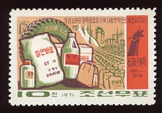 |
| blog.naver.com | 우표 용어 정리 : 네이버 블로그 | 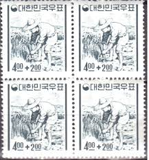 |
| www.etsy.com | Lithograph by Esther Martinez - Harvest - Etsy | 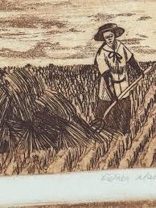 |
| www.leboncoin.fr | COREE DU SUD timbre N°306G oblitéré - Collection | 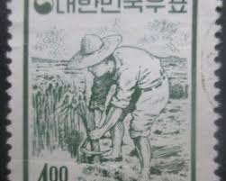 |
| www.ebay.com | Korea South 366a granite paper,MNH.Michel 358. Definitive ... | 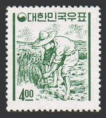 |
| www.lib.uchicago.edu | Stamps: Politics, History, Culture - Understanding North ... | 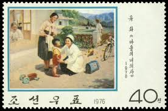 |
| www.istockphoto.com | North Korean Postage Stamp Stock Photo - Download Image Now ... | 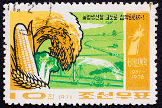 |
| se.pinterest.com | Welcome to korea stamp portal system | 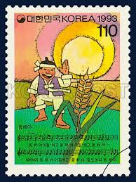 |
| www.yetnal.co.kr | 1965년 경상남도 새경남 3월호 > 근대도서 | 옛날물건 | 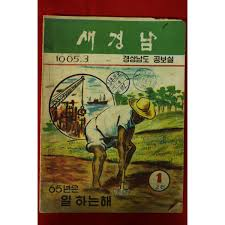 |
| fineartamerica.com | Yuan Dynasty, XIII-XIV Centuries AD, showing rice culture ... | 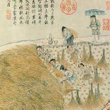 |
| coinweek.com | The First Korean Commemorative Coins of 1970 | 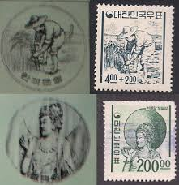 |
| www.korea.net | Childhood reminiscence via old stamps - Part 4. The Heavenly ... | 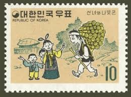 |
| stampaday.wordpress.com | Democratic People's Republic of Korea #1066 (1972) – A Stamp ... | 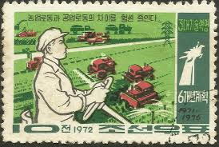 |
| www.shutterstock.com | 41 Tractor Stalin Royalty-Free Images, Stock Photos ... | 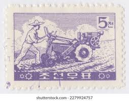 |
| www.si.edu | Kim Chun-gŭn drawings of Korean life | Smithsonian Institution | 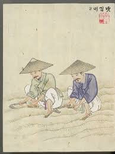 |
| www.cherrystoneauctions.com | Rare Stamps & Postal History of the World - January 14-15 ... | 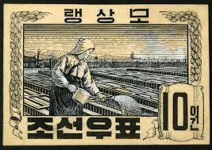 |
| koreastampsociety.org | Download (KSS members only): "KSS Monograph 1: Korean Postal ... | 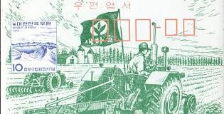 |
| www.post.gov.tw | The Postal Universal Website of R.O.C ─ Stamp House - Pages | 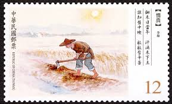 |
| www.postbeeld.com | Stamp 1997, Korea, North Rice planting 2 s/s, 1997 ... | 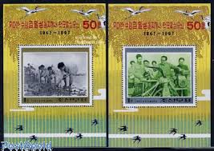 |
| www.album-online.com | Propaganda illustration of a female farm worker extolling the ... | 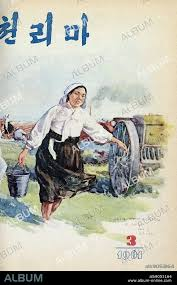 |
| findyourstampsvalue.com | Miruk Bosal - 미륵보살 반가상 1.50w Dark slate green stamp ... | 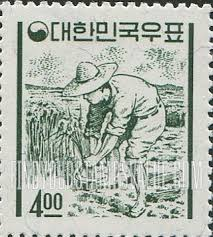 |
| earlycal.com | Lepoldo Mendez "La Sumbra (Sowing)" 1954 linocut – Early ... | 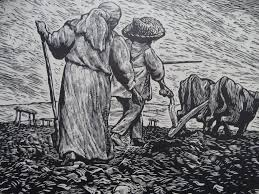 |
| www.korea.net | Childhood reminiscence via old stamps - Part 3 The Sun and ... | 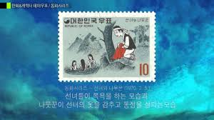 |
| www.fineartstorehouse.com | 1928 Vintage Tobacco Print: Rice Industry in Japan. Art ... | 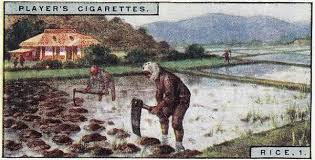 |
| www.levantineheritage.com | Levantine Heritage Foundation: Research - Education ... | 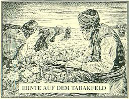 |
| artbookshop.com | Korean Reporter (Keith Vaughan Dust Jacket) — Pallant Bookshop | 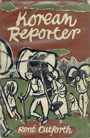 |
| www.facebook.com | OTD JUNE 1953 - This leaflet depicts a miserable North ... | 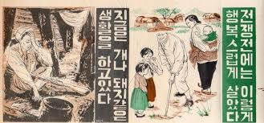 |
| fineartamerica.com | Rice farming Ancient Chinese art o3 Photograph by Historic ... | |
| www.alamy.com | Postage stamp from South Korea in the Korean painting of the ... | |
| www.dickkeiser.com | covers, military, other | |
| www.reddit.com | Korean mythology - The Brother and Sister Who Became the Sun ... | |
| upload.wikimedia.org | Untitled | |
| www.oldtokyo.com | Patriotic Youth Brigade Farmers propaganda postcard ... | |
| findyourstampsvalue.com | Heungbu and Wife with Large Gourd 10w Apple green ... | |
| hbs1000.cafe24.com | 6080추억상회 | |
| whitney.org | Elizabeth Catlett | In the fields... | Whitney Museum of ... | |
| www.instagram.com | Fall begins with 𝘊𝘩𝘶𝘣𝘶𝘯, the autumnal equinox. 🍂 Sept ... |